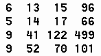

Soit M une matrice carrée de taille n*n (n dans [3..9]) contenant des entiers au hasard strictement positifs inférieurs à 1000.
Soit la suite U définie par :
U0=1
Un=3Un-1-1
On veut ecrire un programme qui permet de:
- Remplir la matrice M.
- Trier dans l'ordre croissant les éléments de chaque ligne de la matrice M.
- Chercher et afficher tous les numéros de lignes de M qui contiennent au moins 2 éléments adjacents qui représentent deux termes successifs de la suite U c'est-à-dire que les cases M[l,c] et M[l,c+1] représentent deux termes Un et Un+1.
Exemple:

Pour cette matrice le programme affiche:
Ligne 2 et ligne 3.